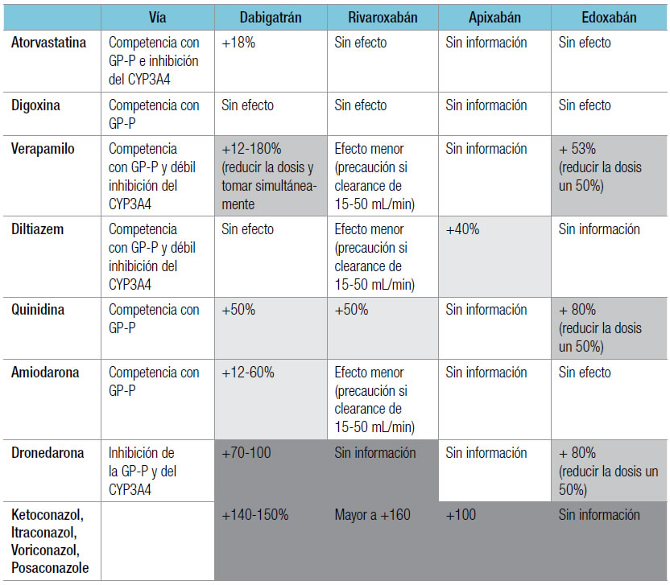
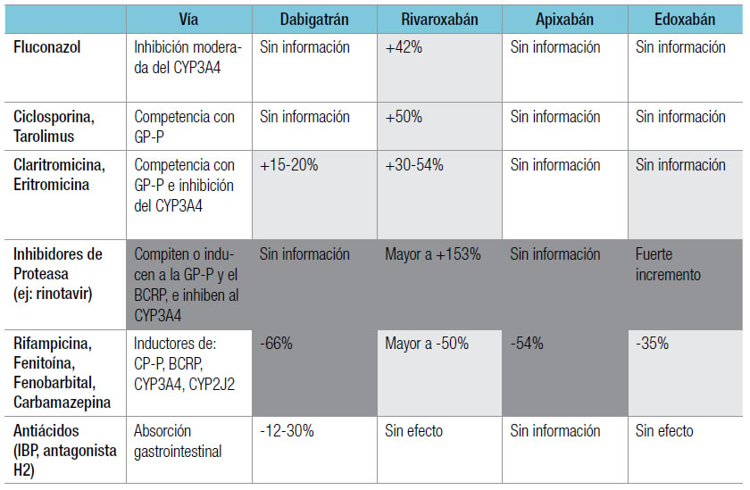
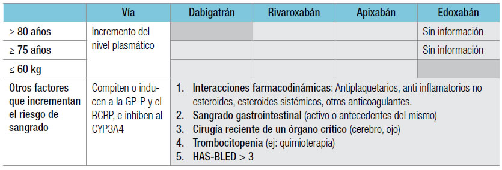

Estos fármacos son susceptibles de interacciones farmacocinéticas pero, a diferencia de los antagonistas de la vitamina K, no hay demasiada información sobre este campo y, a su vez, no se recomienda utilizar un parámetro de laboratorio para guiar su posología en caso de administrarlos con fármacos de conocida interacción.
El dabigatrán, el rivaroxabán y el apixabán son sustratos de la glucoproteína P que dificulta la absorción de determinadas sustancias. Los inhibidores de la glucoproteína P (amiodarona, ketoconazol, quinidina, verapamilo, ciclosporina y tacrolimús) aumentan la absorción de los nuevos anticoagulantes orales (NACO) y su concentración plasmática, y los inductores (rifampicina) la disminuyen.
Existe una diversidad de recomendaciones de las agencias reguladoras sobre las interacciones; por ejemplo, la FDA no recomienda un ajuste de dosis del dabigatrán al combinarse con el ketoconazol, pero en Canadá y la Agencia Europea de Medicamentos se contraindica dicha combinación.
El dabigatrán no se metaboliza por el sistema del citocromo P-450, a diferencia del rivaroxabán y el apixabán (CYP 3A4). Por lo tanto, la concentración plasmática de esos fármacos puede verse afectada al combinarse con medicamentos que inhiben o estimulen dicho metabolismo.
A continuación se describen los fármacos que presentan evidencia de interacción con los NACO. Se ha establecido una clasificación en tres niveles según el grado de interacción que puede presentarse con otros fármacos y factores clínicos que pueden afectar su concentración en la sangre (Tablas 1, 2 y 3).
1. Rojo (gris oscuro): interacciones que contraindican o desalientan su uso en combinación con los NACO.
2. Naranja (gris medio): la interacción requiere que se ajuste la dosis de los NACO, ya que estos fármacos alteran su concentración en la sangre.
3. Amarillo (gris claro): se recomienda mantener la dosis habitual, salvo que se utilicen dos o más fármacos con dicha interacción y se debe decidir si se contraindica su prescripción.
4. En caso de que no haya información al respecto sobre esa interacción ("sin información"), la recomendación (color que aparece en las tablas) está basada en consideraciones farmacocinéticas.
Efectos en las concentraciones plasmáticas de los NACO (área bajo la curva) por interacciones droga-droga, y recomendaciones con respecto a la dosis que se debe administrar.
Efectos en las concentraciones plasmáticas de los NACO (área bajo la curva) por interacciones droga-droga, y recomendaciones con respecto a la dosis que se debe administrar.
GP-P: Glucoproteína P; BCRP: Proteína de resistencia al cáncer de mama; IBP: Inhibidores de la bomba de protones.
EHRA Guía práctica en el uso de nuevos anticoagulantes orales en pacientes con fibrilación atrial no valvular: resumen ejecutivo. European Heart Journal doi: 10.1093/eurheratj/eht.134.
Efectos en las concentraciones plasmáticas de los NACO según edad, peso y situaciones clínicas concomitantes.
 width="100%" class="img-responsive center-block">